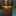
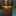
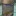
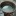
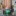
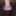
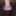
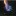
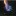

已丟棄的酒精爐
將一些做太失敗已經丟棄的酒精爐移駕至此。只留下一些特殊案例，一些不重要的就刪了。
索引
硬幣酒精爐(外側開孔＆內開孔加高爐壁) #封閉加壓 DIY 危險
YouTube搜尋Penny Stove有很多製作教學與燃燒影片。
中間小孔是洩壓孔，需要放置一塊錢壓住，使爐子維持高壓，達到小孔噴發的效果。
缺點是需要等待預熱，尤其爐體太高太大的狀況下，若氣溫冷，空氣缺氧都可能點失敗。且爐子壓力較大，若失敗後嘗試重新點燃，可能因為酒精蒸氣燃燒膨脹瞬間爆炸，使酒精液體噴發，是一款較危險需小心操作的酒精爐。


IonStove #開放式 DIY
純粹的中心打孔與外層通氣孔，實際燃燒時意外的可以燒非常非常久，但火焰偏小，也因此煮水幾乎只能小滾或不太滾，實驗使用鍋子與燒異丙醇的狀況下，改用更小的爐架與杯子燒乙醇也許會有差異。
此類設計理論燃燒孔應該還是以中間為主，周圍的孔只是幫助進氣而已。所以中間開孔越小，火焰應該就越小，且更不容易點燃。
中心開孔為3cm：

參考此網頁製作教學製作而成：https://hikinghq.net/ionstove/build.htm
螺絲酒精爐 (失敗品) #封閉加壓 DIY
硬幣酒精爐(外側開孔＆內開孔加高爐壁)的變體，嘗試使用螺絲深入到酒精內加熱，加速預熱的作法。
不料不僅螺絲密封性差，酒精提早流進洞中，使得上層沒辦法作為預熱燃燒，需要額外的預熱盤先在外圍灑酒精點燃（但底部預熱盤比較安全沒錯）。
且一旦點燃後，鏍絲又加速內部快速蒸發導致一開始火焰過大，後面又瞬間過小，形成如芥末般，嗆一下就沒了的窘境！整個比硬幣酒精爐還廢！
看似合理的的設計，實則因為細節處理的差異，反而造成反效果！螺絲螺母還徒增重量！
網路上類似的封閉式爐體，其實應該是螺絲螺母要鎖緊或塗膠讓他不要產生空隙，並寫在側邊額外打個鎖孔可以填充酒精，而非直接沿用硬幣酒精爐讓他流進去的作法。
並且爐體小的狀況下其實應該也不需要螺絲加速預熱了，以避免酒精過度蒸發的問題。


波蜜鐵罐酒精爐 #開放式 DIY
單層煙囪爐設計，類似貓罐酒精爐的增高版，直接將上下打兩排孔，上部留2~3cm燃燒空間，且需要在最頂部靠近鍋面處留幾個小排氣孔，避免酒精蒸氣累積在上半部一瞬間燃爆，底部留2cm高度存放酒精（50ml內應該沒問題），並且下半部孔洞預留點火孔空間，適合的高度可兼當爐架。
用95%乙醇燃燒效率不錯高，很快就可以煮滾水。
較高的爐體設計，與外露的火焰，整體來說更怕風，需要搭配更高更密的擋風板包覆（應該需要接近360度環繞）。
第一次燃燒時一樣要小心鐵罐的漆，感覺有毒！


IonStove II #開放式 DIY
將打孔開在外圍，看看能不能改善進氣，結果實驗下來得到跟原本設計不太一樣的火焰效果。

一開始是做得稍高一點，但發現火難點著，而且再次點的時候容易酒精氣爆，後來才改矮。
燒得時候發現火焰會溢出很多，甚至從進氣孔溢流出來，表示內部應該有蒸氣壓力。
但杯子拿起來後又變回只燒中間區域。
原本包圍型爐架包覆太好怕加強酒精升溫，改成自製一個新鋁罐X型爐架。
效果比包圍型爐架好一些，但燒一段時間後還是會噴發竄火焰上來。
不確定開孔在外圍、底部汽水罐底的弧度，跟之前的設計的差異有沒有很大影響，之後可能會再重新嘗試一次原本開在最上緣的方法，並且底部換成全平的看看：IonStove III。
火山爐 #開放式 DIY
受誰でも作れる！自作 アルミ缶 アルコールストーブ 作り方 ロケットアルコールストーブ DIY Alcohol Stove Cask Stove啟發製作的錐狀爐子。

但因為目前所有爐架都太矮。燃燒壓力一大就容易從進氣孔燃燒出來。頂部噴口應該要至少跟鍋子距離3公分以上才可以避免這個問題。
燃燒乙醇
上鍋後可以看到火焰從進氣孔向外噴發。

加入吸附石頭（珍珠石、黑火山石）燃燒乙醇
沒上鍋前可以看到火焰從進氣口向內燃燒的樣式。但上鍋後火焰就會改從進氣孔向外噴發。


燃燒固態酒精塊
燃燒酒精塊從進氣孔向外噴發的這個狀況會到後期爐體很熱的時候才會發生，一般維持上方開口噴火。但燒完之後很難清理。而且一塊有點蒸發掉的過期酒精塊光要燒開200ml常溫水就很有困難。
 



韋恩210ML陶瓷纖維側燒爐 #套筒式 DIY
直接套過外圈陶瓷纖維吸附中心酒精燃燒，因為內壁鍋架層太高很難點火，改由外側繞一圈倒酒精，並由外圈點火。因為整個爐體小，吸附層寬度不足，不容易倒入酒精。中間壁開大孔也是為了讓外圈容易點著，不開孔的話幾乎很難點火。

雪碧330ML波浪爐 #套筒式 DIY
使用雪碧罐製作雙層酒精爐，以側邊壓痕的方式來製作毛細管道外，同時兼當噴火孔，因為不用額外打小洞，製作較容易一些，燃燒效率也還不錯。
因爐體稍高，一開始有可能難以點著，縮到5公分以下的高度應該更理想；爐子熱了之後也可以直接當爐架放上鍋子燒水。
參考YouTube上的製作教學製作而成：〔語音版〕自製鋁罐酒精爐｜調整及修改鋁罐酒精爐〔Vocal version〕DIY a can stove and to adjust to be more efficient

打磨可樂200ML毛細酒精爐II #毛細管道 DIY
打磨可樂200ML毛細酒精爐的第二版，只有12折6孔，組合方法也完全照原始教學易拉罐螺旋火焰出火增压酒精炉制作教程製作，使用三個罐底，但發現罐底對罐底接合其實很容易有縫隙，要注意要壓得非常實，酒精氣化後容易從縫隙中竄出，效果可能會打折。
不過罐體不小心做太高，初次點火熄滅的機率變大。

改成六孔發現其實並不會燒得比較久，其實孔洞的粗細反而影響比較大，第一次打孔較細，空燒10ml乙醇可以燒04:36，但旋轉火焰沒第一版那麼明顯；第二次將孔擴大再凹折更多一些，雖然旋轉火焰更明顯了，但燃燒時間就馬上只剩03:37，感覺跟第一版功能有點重複，有點可惜。
* 小孔徑vs大孔徑

燒水實測，可能因為爐子較高，離杯底距離更小，更延長了一些時間，25ml酒精煮400ml常溫水10分鐘燒開，13:31全部燒完。但火焰竄太高導致整個杯子把手都很燙，這爐子可能只能用在鍋子了。


UCC氣泡黑咖啡搭雪碧酒精爐 #雙層加壓 DIY
前陣子又在YT上無意看到使用罐頂斜面的設計來製作的酒精爐，打孔的位置更靠上方，與之前說危險的形狀設計不太一樣。
但考量到空氣混合導致意外氣爆問題，推測倒入的酒精液面高度應該至少要高過連接內外層的孔洞的大小(15ml以上)比較保險。
*不知是因為用汽水罐頂當底的凹凸不平，還是夾層沒剪裁好，有點歪斜(一邊3.7cm，一邊3.5cm)。

高爐體設計
一開始的爐體因為UCC氣泡黑咖啡的瓶口設計非常堅硬難以剪裁，於是只好完整的使用，高度達到了5公分左右。因為夾層非常的大，加上中間預熱孔非常小，所以啟動時間非常的慢，三分鐘後才啟動。
疊上鐵網觀察火焰燃燒反應，火焰竄得非常之高。
高爐體實際燒水
上鍋後有驚人的反差，因爐高較高，鍋面距離過近，加上過大的夾層空間，加壓效果非常不明顯，火焰限制在一個極小的區域內燃燒，且燃燒緩慢。受風吹後才比較容易觀察到火焰從孔洞噴發的效果。


若使用此次燒水的爐架與鍋具搭配，水幾乎只是小滾。

不過若蓋上蓋子還是可以看到蒸汽推開蓋子的效果，推測其實這個組合應該可以拿來煮飯！？
初步推論
空燒狂放的火焰與上爐架鍋具的差異，更令人確信爐體高度與爐架搭配，以及爐架本身設計都密切相關，之後若有機會應該再製一個專屬X型爐架，稍微加大距離鍋底的空間再來測試。
縮短爐體
縮短至3.6公分左右，夾層縮小，啟動更快，這次花了一分半左右啟動；壓力變大，且搭配爐架離鍋底更遠，含氧量更高，馬上變回高耗燃料型。
19ml乙醇燒300ml常溫水，6分30秒水超級大滾，約9分多鐘熄滅，但用杯子其實大部分熱量都流失了，若用底更大的鍋子來燒感覺更有效益。
內爐壁打孔毛細酒精爐 #毛細管道 DIY
丟棄的原因是爐體高，初始點火較不易。
將嘗試將分焰孔打在內側爐壁毛細管上的設計，由兩個雪碧罐取兩個頭與一個尾製成，製作簡單，不太會不小心壓壞之外，外觀也還蠻漂亮的。
雖然燒起來根本看不出火焰到底有沒有透過毛細管道出口燃燒，但搭配X型爐架得到一個非常穩定的火焰，也有燃燒一段時間後增溫火勢慢慢增大的曲線。
使用15ml乙醇燃燒300ml的常溫水，剛好10分鐘水中滾，效果良好，燒到約12分鐘時想用鐵網蓋住看看燃燒形狀結果缺氧火滅了，再次點燃內部乙醇還可以再燒約30秒左右。

移開杯子觀察燃燒，火焰竄很高。

後續重新點燃，觀察火焰有個固定時長頻率的波動，猜測毛細管應該還是有推力效果吧，若是單純燃燒正常說不太會有這種太規律的波動。
伯朗240ML陶瓷纖維加壓酒精爐 #雙層吸附 DIY
一般雙層加壓爐需要等待酒精在夾層中氣化後產生壓力噴出，此款在夾層中心放置陶瓷纖維，直接將酒精完全吸附至夾層中，啟動可後在夾層內快速加壓，火焰爆發出來，聽得到火焰噴發的氣流聲音。
但缺點顯而易見就是火力消耗較快，還有因為陶瓷纖維會吸附太多的酒精。初始酒精量必須大於20ml，爐子中心才有殘餘酒精可以做預熱的動作，但一旦啟動完成後，火焰的高壓就算直接將鍋或杯子疊在上方也不會使火焰熄滅。


UCC274ML+烏龍茶320ML罐底直扣酒精爐 #雙層加壓DIY
參考YouTube上的教學，可能因為腔體較大，中空管不易加熱酒精，預熱很慢（異丙醇約３分半，乙醇２分鐘），但燃燒起來效果穩定，20ML乙醇可燒開400ML水。
這個爐體作法可以很安全的接合爐體，不太容易歪來歪去壓壞鋁罐，點這裡看教學。


大小套嵌酒精爐 #雙層加壓 ＤＩＹ 🛠️簡易
參考這個教學製作而成：【日本露營野營】5分鐘自製酒精爐DIY～又研究出有意思的酒精爐啦！最新結構～這次製造過程超簡單/手殘黨也能做喔🔥Alcohol Camp Stoves#自制酒精爐—（有字幕）。
使用了可樂200ML+UCC184ML兩種不同大小的罐子來分別做成內外壁。
原作沒有凹內毛細褶痕，但因為這次製作為了讓內壁可以完美貼合罐底，還是參考了一般毛細酒精爐內壁的作法，其實應該也是可以不用折直接套。
啟動時間也是約30多秒，外環打孔半徑較大，分焰形狀很美，沒特別測試燒水，看起來也是大火力類型，空燒10ml乙醇耗時03:53熄滅。
 

大小套嵌酒精爐(套鐵罐版) #雙層吸附 ＤＩＹ 🛠️簡易
嘗試中間內壁換成鐵罐，讓爐體更穩固，可以直接放鍋子。
但因為鐵導熱慢酒精不容易燒起來容易熄火，所以乾脆又在夾層放了陶瓷纖維棉，由底部露出的一小截陶瓷纖維棉幫助預熱。也因為鐵導熱慢所以酒精較不容易快速的氣化，可以穩定燃燒速率。

UCC184ML硬幣酒精爐 #封閉加壓 ＤＩＹ 🛠️進階
原本之前做的硬幣酒精爐因為不太方便皆以丟棄，但因為這種類型的爐子太經典了，最後還是重做了一個新的當作紀念。
上方盤面更小，基本上更不可能透過上方預熱來啟動，必須完全靠底部預熱。
鑽洞不小心割破一刀變成斜洞，就當作是特色吧QQ。
初始預熱酒精不用放太多，測試時放太多一開始火焰太大了太恐怖，而且一瞬間酒精氣化太多也會浪費掉太多燃料；從底部預熱啟動的速度其實超級快。
打孔在外側的關係，杯子一樣可以直接架在上面沒問題。


UCC184ML毛細酒精爐 #毛細管道 ＤＩＹ 🛠️進階
發現網路購買的手工毛細酒精爐，其實網路上也教過類似做法，就跟著做了：
YouTube: 酒精真的很危險？教你用鋁罐自製安全又好用的酒精爐！【胡思亂搞】
Facebook: 酒精爐簡易版製作
初次測驗空燒異丙醇15ml原本燒了快14分，不過經過密封與彍一下孔洞實際燒起來效果也是很好，變成7分多鐘燒完；搭上爐架使用杯子盛水，燒乙醇15ml花7分鐘燒開400ml的水，而且是大滾(氣溫大蓋是25度)，燒了9分鐘之後才滅。
原本做法是貼鋁箔膠帶密封，後來撕開來重新用摺痕方式製作，底部毛細層貼合處不是剪線型縫隙而是直接打洞效果也不錯，雖然外觀有些損壞，但直接敗部復活，測試使用75%消毒酒精，燃燒火焰很美，水也是會滾。


咕嚕康普茶外打孔酒精爐 #毛細管道 ＤＩＹ 🛠️進階
家樂福發現的咕嚕康普茶鋁罐裝，標籤可以直接撕掉，完全省去打磨的功。內層因為是剪開再釘起來，應該沒有很密合，但燒起來還可以。
X型支架因為是薄薄鋁片折疊的，架起來有點歪，如果要用這種支架應該還是要買一下。
乙醇應該約20~30ml左右，燒400~500ml左右的水，10分鐘後水滾，火焰持續約12分鐘。

白魔爪波浪爐 #套筒式 ＤＩＹ 🛠️簡易
雪碧330ML波浪爐的魔爪版本，跟咕嚕康普茶加蓋波浪爐一樣也是會快速點燃的類型，要馬上將鍋子架上去。
爐體較高，初次較難點燃，可以嘗試傾斜爐體點火（要非常非常小心不要燒到手了）
參考YouTube上的製作教學製作而成：〔語音版〕自製鋁罐酒精爐｜調整及修改鋁罐酒精爐〔Vocal version〕DIY a can stove and to adjust to be more efficient


伯樂爐 #雙層加壓 ＤＩＹ 🛠️進階
與可樂200ML鋁箔膠帶酒精爐一樣的設計，差異在孔數較多、孔徑較小與打孔在罐腳上。
酒精容器用可樂220ML，上蓋用伯朗拿鐵的金邊裝飾當作燃燒孔環形上蓋，剛好打了12個孔，再用隨便一個鋁罐剪下捲成環形內壁。
橘子爐 #雙層加壓 ＤＩＹ 🛠️進階
使用橘子飲料罐上端斜面縮口當作燃燒孔的環形上蓋，可樂200ML當內壁。有斜面瓶口的汽水罐應該都可以這樣製作。
仿舊爐 #雙層吸附 ＤＩＹ 🛠️進階
類似橘子爐的工法，開上蓋改用內緣開罐器，加上陶瓷纖維當作外層吸附材質。
內層使用較軟的UCC184ML鋁罐去壓會爛掉，所以改用偉恩咖啡鐵罐當作內層，整個爐子也因此非常有重量。
仿舊風格是為了刷掉醜醜的羅望子汁外層的漆，直接整個爐子拿去燒，內層鐵罐的漆連帶讓整體有一種黑黑舊舊的感覺。
 

不知為何火焰有彈跳效果，如圖中碧綠色箭頭所示。
IonStove III #開放式 ＤＩＹ 🛠️簡易
參考此網頁製作教學製作而成：https://hikinghq.net/ionstove/build.htm
為了用杯子燒水重製IonStove，前一個重製版本IonStove II的燃燒結果有點出乎意料所以又再做一次。
這是此用了牛奶花生鐵罐平底與雪碧罐底製成，並且改回初代的打孔設計。
牛奶花生的罐的尺寸有個微小的差異，雖然外表看不出來但其實比汽水罐還要小一點，但卻又可以完全緊密接合，之後如果要做其他平底酒精爐也可以考慮搭配使用。
偷懶透過直接燃燒爐體外表以方便刷掉漆面，鐵罐與鋁罐呈現截然不同的顏色，但燒完真的很臭，連爐體都散發臭味，感覺超有毒。
燃燒使用鋁罐X型爐架，因開口較小，加上爐體主要為鐵罐材質，要達到工作溫度比鋁罐慢，燒起來後火焰幾乎限制在一個小區域，不像前一個重製版本IonStove II一樣向外噴發。

有風的時候火焰會飄出來，但X型支架的擋風效果還可以，要完全不飄就是要搭配擋風板。
燃燒時間跟初代一樣久到爆炸，使用20ml乙醇燃燒300ml常溫水，約20幾分鐘水呈現中滾狀態，到熄滅來到驚人的28:24。
此爐子的定位應該就是適合小杯子與慢燉使用，也想不到可以怎樣改良了。
雪碧330ML三芯酒精爐 #燈芯式 ＤＩＹ 🛠️進階
三個燈芯的設計，用了更厚實一點的陶瓷纖維，初始火焰範圍更大。搭配更小的杯子煮水，火焰有些溢出但也還行。


８：８孔雙層煙囪爐 #雙層煙囪 ＤＩＹ 🛠️進階
受Chimney Type Alcohol Stove 1啟發製作的爐子，外壁下緣與內側頂部各打8個通氣孔孔。
類似柴火爐概念，空氣從外環底部流經外環腔室到上方才進氣，比起單層開放煙囪的如貓罐酒精爐更防風一些。
側邊開進氣孔，表示未來也可以增加控制火力大小的環，如影片所示：炊飯に最適かも !? チムニー型アルコールストーブ Adjustable Chimney Alcohol Stove
１６：８孔雙層煙囪爐 #雙層煙囪 ＤＩＹ 🛠️進階
一樣受Chimney Type Alcohol Stove 1啟發製作的爐子。
底部孔洞數多不知道有沒有影響，使用新調配的綠焰精靈燃燒，乙醇80%甲醇10%硼酸水溶液10%，兩種酒精的占比太高，燃燒暴衝，直接把爐子外觀燒黑。
孔洞設計，外壁底部打16個孔，內側頂部打了8個孔。
實際燃燒，過純的酒精溶液暴衝，燒300ml常溫水，15ml燃燒約4分半就結束，水沒有滾。


使用75%乙醇燃燒，火焰溫和不爆衝。300ml常溫水使用20ml的75%乙醇(占比15ml)約10分鐘水滾剛好差不多燒完。
伯朗拿鐵240ML不織布酒精爐 #雙層吸附 ＤＩＹ 🛠️進階
伯朗240ML陶瓷纖維加壓酒精爐的精緻重製板，改用不織布當作吸附材質。
使用伯朗拿鐵的罐子，外觀的金邊裝飾剛好對應12個洞，內圈使用咕嚕康普茶當作內壁，並包圍不織布吸附酒精加速啟動。
因為距離打孔太高，距離鍋底過近，且不織布吸附好似沒有陶瓷纖維般明顯加壓效果，不像前一版可以直接疊鍋具上去。
火焰向外發散，應該要用更大的鍋面，才會更有燃燒效益。
使用甲醇30ml可燒開500ml的水，約7分多鐘水滾。
可樂330ML罐底直扣酒精爐 #雙層吸附 ＤＩＹ 🛠️進階
使用罐底直扣製程，但是中心挖圈更大。
外層捲一圈不織布，啟動速度更快，不織布更薄吸附較少酒精比較有剩餘的酒精量可供預熱。
使用純甲醇燃燒火焰比較高（燒到整個杯壁上方）：
使用75%甲醇燃燒火焰比較溫和：
韋恩波浪爐 #套筒式 ＤＩＹ 🛠️進階
與鋁盒鐵罐波浪爐一樣的設計，差異在摺痕數較多（12個）、與完整使用整個罐子上。
鐵罐稍難加工，但重量較重比較不太容易打翻，鐵導熱慢燃燒也較穩定不容易暴衝。

韋恩毛細爐 #毛細管道 ＤＩＹ 🛠️進階
與UCC184ML毛細酒精爐一樣的設計，韋恩咖啡鐵罐的環密封性比鋁罐的好一點，多貼個鋁箔膠帶增加厚度就可以封住（要記得再打孔暢通燃燒通道），不用再向內折來密封。
鐵罐稍難加工，但重量較重比較不太容易打翻，鐵導熱慢燃燒也較穩定不容易暴衝。
鐵鋁罐複合加蓋波浪爐 #套筒式 ＤＩＹ 🛠️簡易
與咕嚕康普茶加蓋波浪爐相同製程，但容器換成鐵罐，內層維持鋁罐。
但因為鐵罐熱傳導較慢，且上蓋燃燒區高度太低整體溫度偏低，使用消毒酒精（低於75%的乙醇）汽化的速度不夠，直接杯子疊上去會熄火，建議使用純度99%乙醇燃燒。
燃燒效率很好，使用15ML99%乙醇，煮300ML的常溫水，3分多鐘開始滾，4分15秒水大滾，繼續加水放著燒，燒了8分30秒才熄滅。
綠魔爪波浪爐 #毛細管道 ＤＩＹ 🛠️簡易
白魔爪波浪爐一樣的製程，但保留了上緣金屬環，更加穩固美觀。
爐體較高，初次較難點燃，可以嘗試傾斜爐體點火（要非常非常小心不要燒到手了）
PowerBomb硬幣爐 #封閉加壓 ＤＩＹ 🛠️進階
更大一點的硬幣爐版本，最大容量約40ml。

笑臉爐 #燈芯式 ＤＩＹ 🛠️進階
受アルコールストーブ製作過程ライブ D IY Alcohol Stove啟發製作的可愛爐子。

原本只是想製作普通的雙層加壓爐，想說頭頂燃燒口當作火焰頭髮。但笑臉開口太小火焰會點不著，後來就改良於眼睛塞進捲入陶瓷纖維的鋁罐壁管子，透過眼睛先預熱，眼睛連接底部的鋁管可以再加熱底部，連鎖讓嘴巴開口處也加入燃燒。